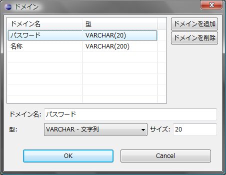
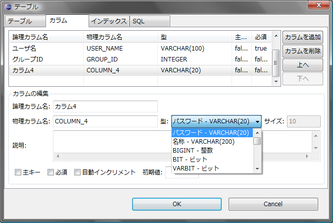

ダイアグラム内で共通的に使用するデータ型はドメインとして定義しておくと便利です。 データ型をドメインとして定義しておけば、あとから定義を変更する際もドメインの設定を変更するだけですべてのテーブルに変更が反映されます。
ドメインの定義を行うにはダイアグラム上で右クリック > [ドメインの編集]を選択するか、 アウトラインビューでドメインのノードをダブルクリックします。 すると、以下のようなダイアログが表示されます。

このダイアログで定義したドメインは、テーブル編集ダイアログのカラムタブでカラムのデータ型を選択するプルダウンに追加されます。
